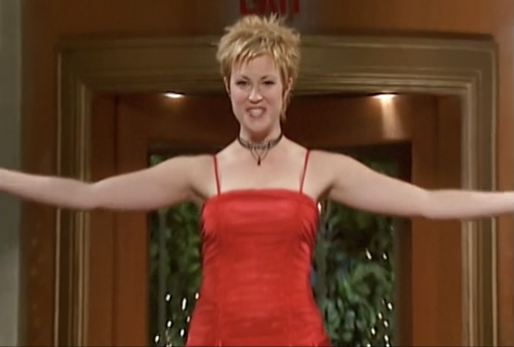
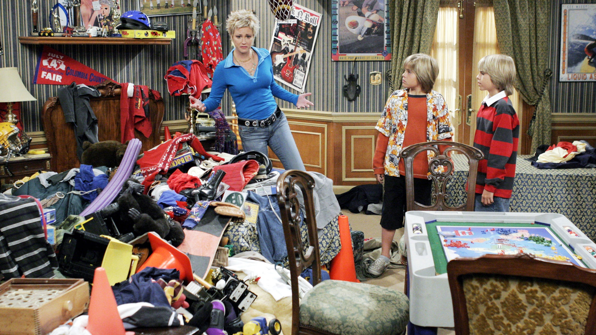

Carey (Zach and Cody's) mother
Carey (Zach and Cody's) mother sings for a living at the Tipton yet numerous times throughout the series it's been mentioned that she was a backup singer for Linda Ronstadt, Elton John, Bob Seger, and Eddie Rabbitt. If she did in fact sing for all of those big name artists she would have been residing in Los Angeles as a full time session singer and not a cocktail singer in Boston.
Mr. Moseby

When Mr. Moseby takes Zach and Cody to a Red Sox game, the game is cancelled when he tried to interfere and rob a foul ball from the Yankees frist baseman. The actual first base side at Fenway Park doesn't have a green protective wall to the left as depicted in the series.
Strange autograph
Throughout the show, whenever Marion Mosesby asks a famous person for an autograph, he always says to have it made out to "Marion". The person asks him if the person is for a female relative. However, he is wearing a name tag; so it should be obvious to the person he is asking for the autograph himself.
Janice and Jessica

Zack and Cody's love interests twins Janice and Jessica were discovered at a live taping of the show! Actresses Milly and Becky Russo who played the blonde twins, revealed to KidzWorld the amazing way they got their big break. "We went to a live taping of The Suite Life of Zack and Cody which is open to the public, we were discovered by chance, by the executive producer of the show," Milly said. "She heard that we were English and we were twins, and she asked us to audition for the show. So, we took acting lessons for several months and we auditioned to be on one episode, and they liked how we played the characters, so they put us in 7 episodes!"